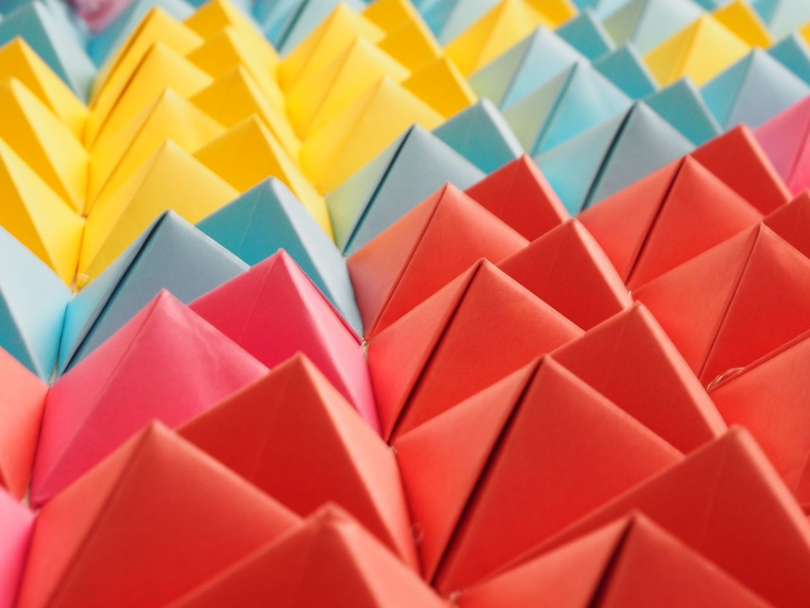
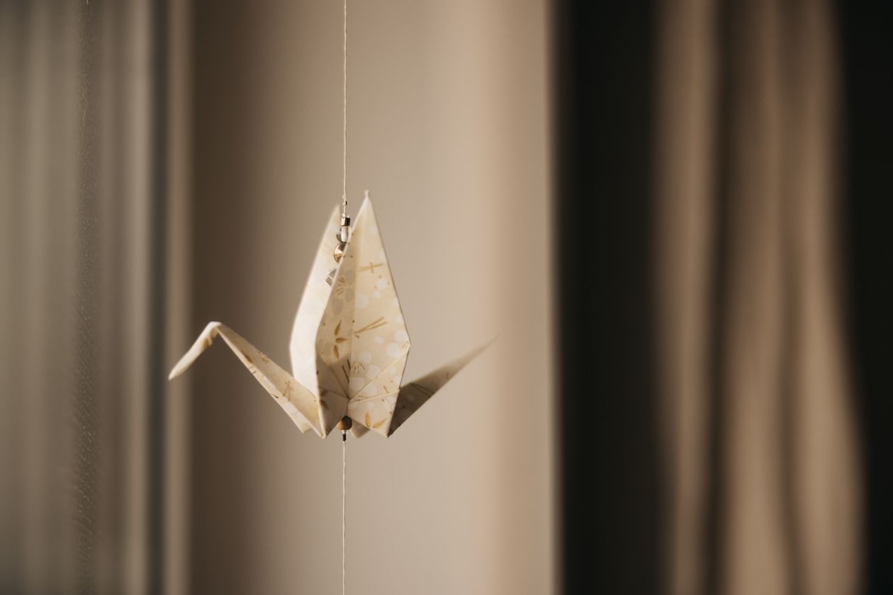
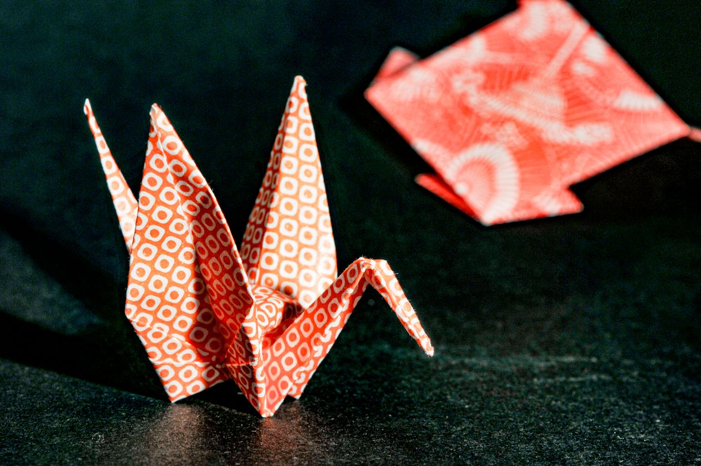
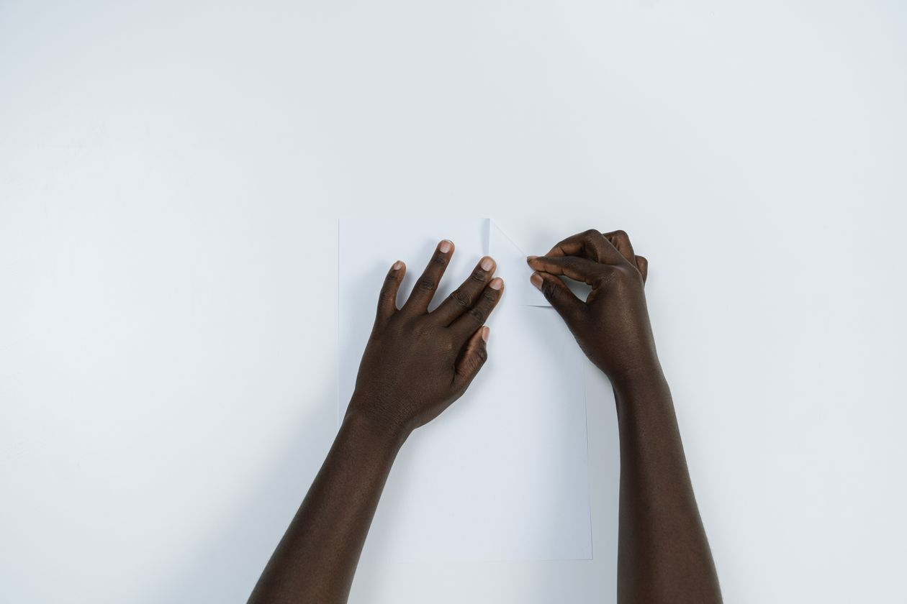

Fold Field in Four Colours
- System
- Pyramid tessellation
- Paper
- Tant, printed in four colour fields
- Sheet
- 100 × 100 cm
- Folded size
- 64 × 64 cm, framed
- Folding time
- 38 hours across 8 days
- Status
- Available — £1,850 framed
Mara Ellison · Origami Artist · Bristol — currently booking: two slots for spring
Fig. 00 — The sheet, before it is a sculpture
I fold origami tessellations and wet-folded sculpture from single sheets of paper — nothing cut away, nothing glued on. The work goes into interiors, editorial photographs and private collections, and every piece starts life as a drawing — a crease pattern, which is the whole sculpture written flat.

Fig. 01 — Selected work
Nothing here is assembled. Each piece is one sheet of paper whose shape was decided entirely by where it was creased. Use the toggle on any piece to see its crease pattern — the drawing the fold was made from. Click a photograph to enlarge it.




Fig. 02 — The practice
A tessellation is not folded the way a crane is folded. The crane is a sequence; the tessellation is a field of creases that has to be persuaded to collapse all at once, evenly, without tearing. This is the order of work.

The geometry is worked out first, full-size, on paper. The crease pattern is the contract for the whole piece: if the drawing does not close up on paper, the fold will not close up in the sheet.
Paper decides what is possible. Thickness sets the smallest fold that can be made; fibre length decides how many times a crease can be worked before it tires and tears. Most pieces are Tant or washi; thick waterbomb work needs Elephant Hide and a scoring stylus.
Every new pattern is folded small first. Roughly one test fold in three goes in the bin — wrong paper, a pleat that will not sit, a corner that crushes. The failures are kept in a drawer and consulted; they are the cheapest research there is.
Each crease in the pattern is folded, sharpened with a bone folder and opened flat again. On a metre sheet this takes days. Only then does the sheet know where it is going.
The whole field is coaxed up at once, working from the centre outward, a few millimetres at a time. It is the slowest stage and the one that cannot be hurried: force a tessellation and it answers with a torn crease, and a torn crease means starting again from a new sheet.
Panels are stitched to a backing board at the edges — no glue touches the face of the fold — and framed behind UV acrylic with spacers, so the paper never touches the glazing.
Fig. 03 — Commissions
Private pieces, panels for interiors, folded work for editorial photographs and packaging prototypes. The shape of the process is always the same, and the price is agreed before any paper is cut to size — paper is never cut, in fact. It is folded.
Tell me the space or the use, the rough size and the date you need it by. I reply within two working days with whether the idea folds — some do not, and it is better to know at this stage.
I fold a small version of the actual pattern in the actual paper. You approve the test fold, the paper and the framing before anything is booked. The fee comes off the final price.
The deposit reserves the bench time and buys the paper. Large sheets of washi are ordered in and can take a fortnight to arrive.
You get photographs at the pre-crease stage and again before mounting. If a sheet fails mid-fold — it happens — the replacement sheet is my cost, and the timeline moves, not the price.
Framed pieces travel by courier in a rigid crate, UK-wide. Installations are hung by me, usually over one or two nights so a room can keep trading.
| Work | Guide |
|---|---|
| Small framed pieces (cranes, single forms) | from £380 |
| Tessellation panels, framed | £950 – £3,200 |
| Editorial and advertising folds | from £450 per piece |
| Packaging prototypes | from £600 |
| Installations | £4,000 – £12,000 typical |
What moves the price: sheet size, pattern density, and paper. A dense tessellation in handmade washi takes three times the hours of the same size in Tant, and the quote says so, line by line.
From the client — The Pattern Room
“Guests photograph the ceiling more than the food. Two winters of restaurant steam and the cranes still hold their edges — Mara replaced six that had softened, on a Sunday night, without us closing a single service.”
Daniel Okafor — owner, The Reading Room restaurant, Bath. Commissioned The Pattern Room, 2024.
Two commission slots are open for spring. The test fold comes first, and it is credited in full.
studio@geometric-fold.example